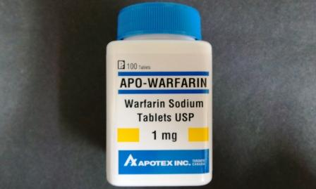
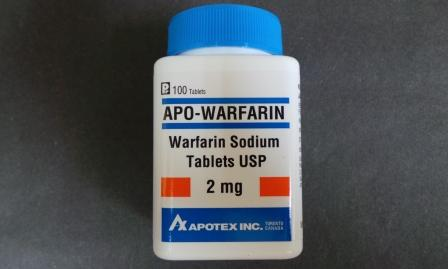
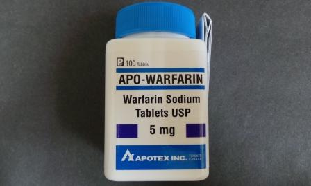
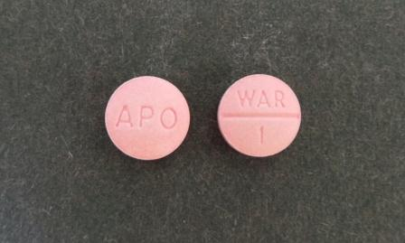
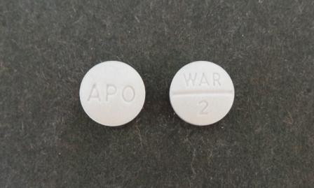
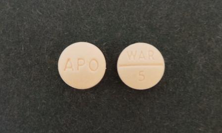
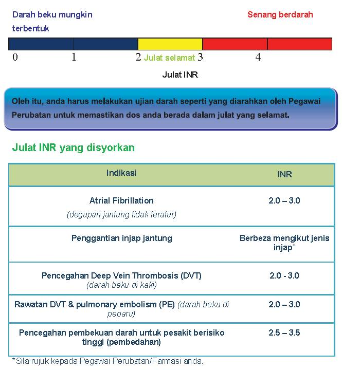
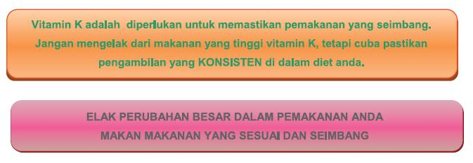
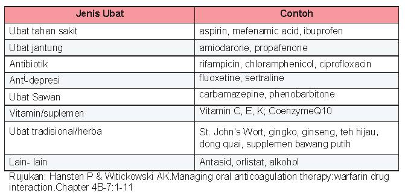

Cara Pengambilan Ubat Warfarin

Apa itu ubat Warfarin?
Warfarin adalah ubat yang digunakan untuk mencegah pembekuan darah dalam saluran-saluran darah. Ia dikenali sebagai ubat cair darah.
Mengapa saya memerlukan ubat Warfarin?
Anda mungkin mempunyai masalah atau risiko berlakunya pembekuan darah tidak normal, sebagai contoh:
- Denyutan jantung tidak teratur (atrial fibrillation)
- Gantian injap jantung (heart-valve replacement)
- Darah beku di kaki (deep vein thrombosis)
- Darah beku di paru-paru (pulmonary embolism)
Apabila pembekuan darah tidak normal berlaku, pengaliran darah di dalam badan akan terjejas. Ini mungkin mengakibatkan rasa sakit, malah komplikasi boleh berlaku apabila darah beku tersebut bergerak ke bahagian-bahagian lain di dalam badan. Contohnya, darah beku boleh bergerak ke jantung, paru-paru atau otak dan mengakibatkan serangan jantung dan strok.
Namun, warfarin tidak berupaya untuk melarutkan darah beku yang telah terbentuk tetapi boleh mengelakkan darah beku tersebut daripada menjadi lebih besar dengan menghalang pembekuan darah yang baru.
Oleh itu, pengambilan dos warfarin hendaklah tetap dan dikawal secara rapi.
Berapa banyak perlu saya ambil?
Doktor akan menentukan dos warfarin anda berdasarkan ujian darah yang dikenali sebagai International Normalised Ratio (INR).
Bacaan INR menerangkan kadar berlakunya pembekuan darah di dalam badan anda. Nombor INR yang tinggi menunjukkan masa yang lebih lama diperlukan untuk darah membeku (risiko berdarah lebih tinggi), manakala nombor INR yang rendah membawa maksud yang sebaliknya (risiko pembekuan darah tidak normal).
Biasanya, INR yang dikehendaki adalah antara 2.0 - 3.0. Namun begitu, ada juga individu yang ditetapkan untuk mencapai INR 2.5 - 3.5. Ini adalah berdasarkan kepada penyakit anda dan ia ditentukan oleh doktor.
Oleh itu, anda harus melakukan ujian darah seperti yang diarahkan oleh doktor untuk memastikan dos anda berada dalam julat yang selamat dan berkesan.
 Apakah yang boleh mempengaruhi keputusan INR saya? Adakah dos warfarin saya akan berubah?
Keputusan INR dipengaruhi oleh beberapa faktor seperti:
- Ubat-ubatan / suplemen
- Pemakanan
- Penyakit
- Aktiviti fizikal
- Pengambilan alkohol
Perubahan keputusan INR akan menyebabkan perubahan kepada dos warfarin supaya INR anda sentiasa di dalam julat yang selamat.
Dos warfarin adalah disesuaikan mengikut keperluan setiap pesakit. Oleh itu dos anda mungkin berlainan daripada pesakit yang lain.
Bagaimana saya mengambil warfarin?
Warfarin haruslah diambil sekali sehari pada masa yang ditetapkan. Pengambilan ubat ini tidak boleh dihentikan tanpa nasihat doktor.
Sekiranya saya terlupa mengambil?
Jika anda terlupa satu dos, makan sebaik sahaja anda ingat (dalam tempoh 8 jam daripada masa biasa ubat ini diambil).
Jika sudah sampai dos yang berikutnya, tinggalkan dos yang terlupa dan ambil dos yang seterusnya seperti biasa.
Jangan gandakan dos anda!
Bilakah saya perlu mendapatkan rawatan segera?
Pendarahan merupakan kesan sampingan yang serius apabila mengambil warfarin. Sila hubungi doktor jika anda mengalami tanda-tanda pendarahan seperti berikut:
- Pendarahan yang lama daripada luka
- Hidung berdarah
- Gusi berdarah
- Batuk berdarah, muntah darah
- Lebam yang tidak diketahui puncanya
- Kencing berdarah atau berwarna gelap
- Najis berwarna gelap atau hitam
- Kedatangan haid yang luar biasa
Apakah yang perlu saya ketahui mengenai pemakanan saya semasa pengambilan ubat ini?
Kebanyakan makanan di dalam pemakanan seharian kita mengandungi Vitamin K. Oleh kerana Vitamin K membantu dalam pembekuan darah, maka ianya mempunyai kesan terhadap pengambilan ubat ini.
 Apakah yang perlu saya ketahui mengenai pengambilan ubat-ubatan yang lain?
Warfarin mempunyai pelbagai interaksi dengan ubat-ubatan sama ada ubat yang diberi oleh doktor ataupun yang dibeli sendiri. Warfarin juga boleh berinteraksi dengan suplemen dan herba. Sila maklumkan kepada doktor atau pegawai farmasi jika anda mengambil ubat-ubatan yang lain.
